향후 카카오 AI 서비스에서 활용할 MCP 발굴을 위한 공간
기능 중심과 플랫폼 목적이 뒤섞인 MCP 환경에서, 개발자가 가장 효율적으로 실험·등록·연동할 수 있는 구조는 무엇일까? 의 고민을 시작으로, 모든 정보를 단일 콘텐츠로 제공할 경우 구조적 복잡성과 정보별 품질 편차가 발생한다는 인사이트를 기반으로, 검색 결과를 보다 구조적이고 안정적으로 제공할 수 있는 방향을 도출했습니다.
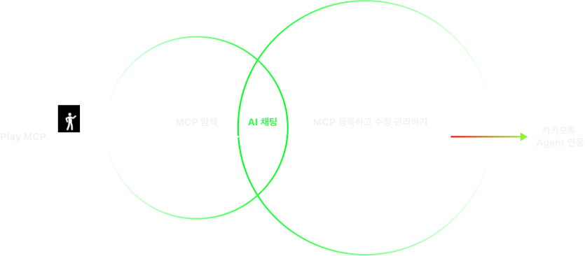
탐색 → 등록 → 체험 유기적인 동선으로 순환구조를 정의
Play MCP는 개발자가 MCP를 탐색하고 직접 등록·관리하며, 실제 챗 인터페이스에서 체험할 수 있는 구조입니다. 이 흐름은 반복적인 실험과 개선이 가능한 순환형 테스트 플로우로 설계되었습니다.
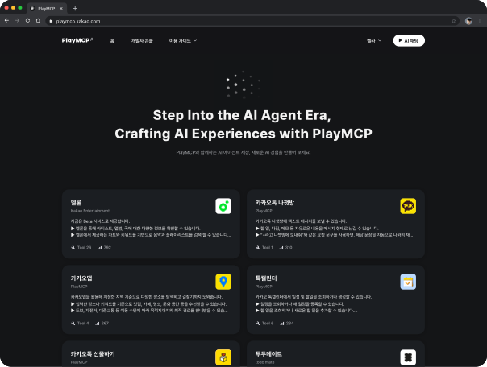
전체 MCP 탐색MCP 탐색으로써 마켓 역할
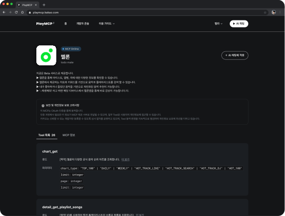
전체 MCP 등록 / 관리MCP 등록할 수 있는 작업 공간
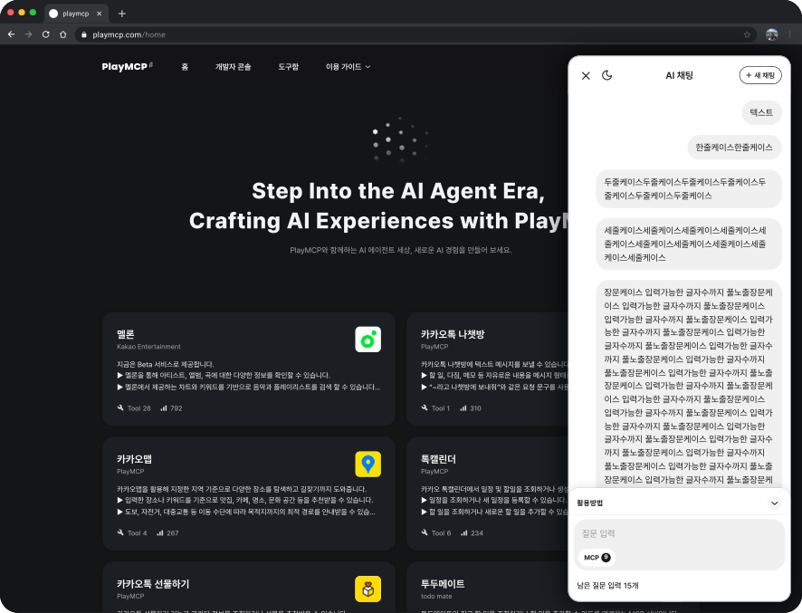
AI 채팅AI 채팅방으로의 검증 환경
쉬운 등록과 수정
필수값만 최소한으로 받아 빠른 시도 가능하게 설계하며 다수 MCP 를 보유한 유저도
한 눈에 확인할 수 있도록 심사 진행 상태를 구분하여 카드 형식으로 MCP 상태 제공하게 했습니다.
개발자 콘솔에서 MCP 등록하기
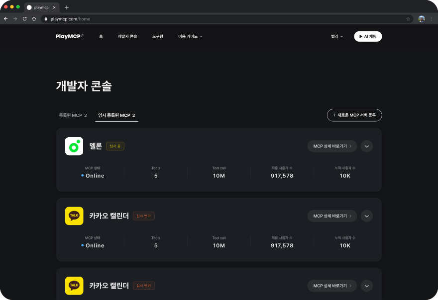
내가 등록한 MCP 상태값 확인하기
실제 환경과 비슷한 환경에서 테스트하기
MCP 등록 과정에서 추가한 대화 스타터를 실행하고 툴 호출을 할 때
결과 시각화 기능을 통해 직관적이고 빠른 MCP 테스트를 유도했습니다.
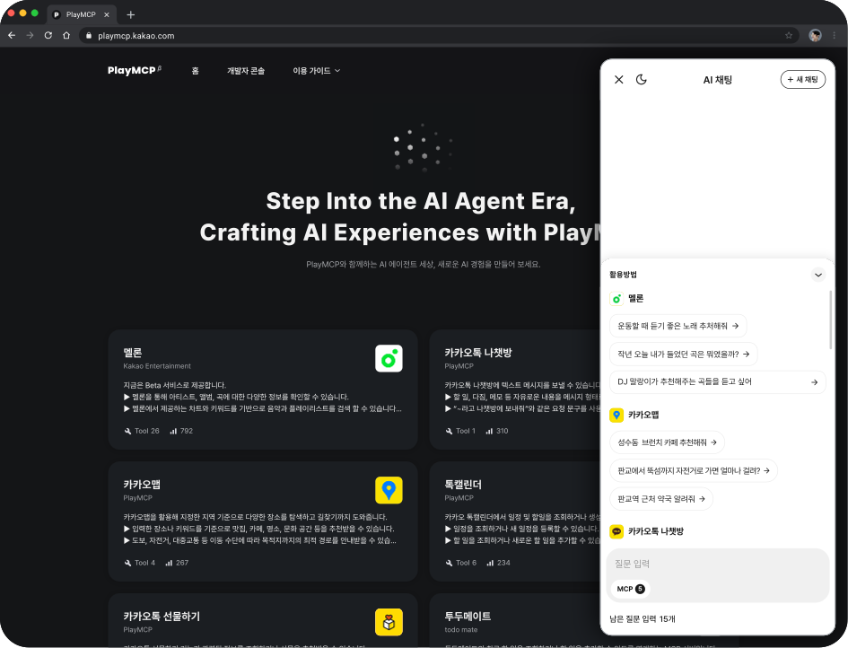
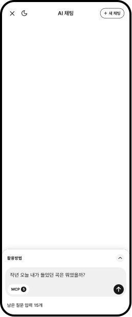
AI 채팅 질문하기
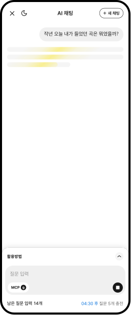
AI 프로그레스바
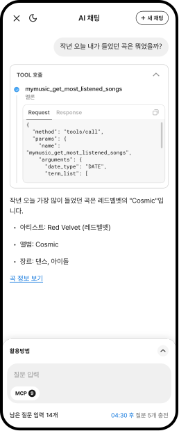
TOOL 호출
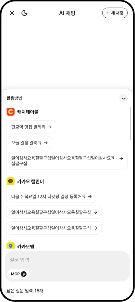
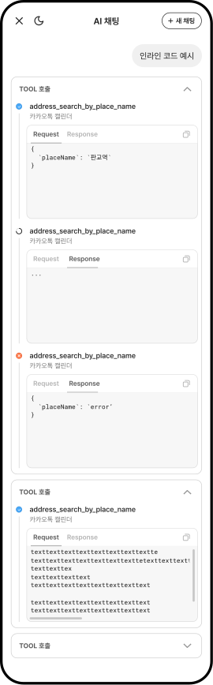
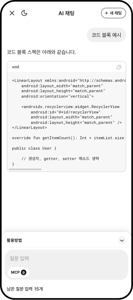
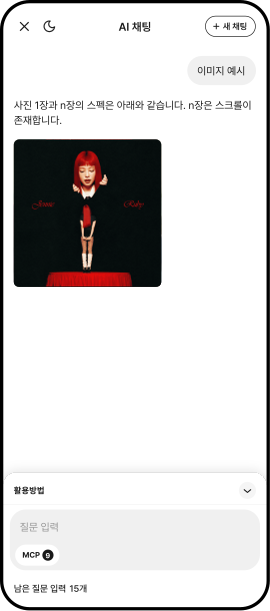